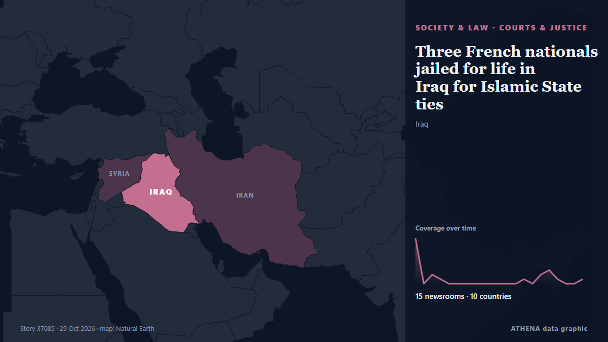

Three French nationals jailed for life in Iraq for Islamic State ties

BAGHDAD, Oct 29 - Three French nationals were sentenced to life in prison in Iraq on Thursday for belonging to Islamic State, with their lawyers and French embassy representatives present at the… από The Straits Times
Αναφέρθηκε ανεξάρτητα από 15 μέσα σε 10 χώρες από τις 27 Οκτ, πρώτο από το The National· η κάλυψη εξασθενεί. Το ATHENA εκτιμά τον κίνδυνο χαμηλό (1.7/10), κυρίως λόγω της σοβαρότητας της βλάβης που περιγράφεται και της γεωγραφικής και τομεακής εμβέλειάς του. Η βεβαιότητα είναι 92% (υψηλή), καθώς το επιβεβαιώνουν 15 ανεξάρτητα μέσα με μέση αξιοπιστία πηγών 78%.
Γιατί έχει σημασία: Οι νομικές αλλαγές και οι αλλαγές πολιτικής μεταβάλλουν δικαιώματα, υποχρεώσεις και δημόσιες υπηρεσίες για όσους αφορούν.
Τι άλλαξε: 8 νέες αναφορές από 8 μέσα στο 24ωρο έως 29 Οκτ.
Πρώτη διατύπωση: Iraqi court sentences six French men to life in prison for Islamic State membership
Οι τίτλοι των ειδήσεων παρουσιάζονται στα αγγλικά, όπως δημοσιεύτηκαν.
Με μια ματιά
Επιλέγεται, βαθμολογείται και γράφεται από τη δημοσιευμένη μεθοδολογία του ATHENA. Κανένας συντάκτης δεν παρεμβαίνει σε μεμονωμένα γεγονότα. Πώς παράγεται ›
| 27 Oct 08:31 UTC | 10 |
|---|---|
| 27 Oct 11:31 UTC | 0 |
| 27 Oct 14:31 UTC | 2 |
| 27 Oct 17:31 UTC | 1 |
| 27 Oct 20:31 UTC | 0 |
| 27 Oct 23:31 UTC | 0 |
| 28 Oct 02:31 UTC | 0 |
| 28 Oct 05:31 UTC | 0 |
| 28 Oct 08:31 UTC | 0 |
| 28 Oct 11:31 UTC | 0 |
| 28 Oct 14:31 UTC | 0 |
| 28 Oct 17:31 UTC | 0 |
| 28 Oct 20:31 UTC | 0 |
| 28 Oct 23:31 UTC | 1 |
| 29 Oct 02:31 UTC | 0 |
| 29 Oct 05:31 UTC | 2 |
| 29 Oct 08:31 UTC | 3 |
| 29 Oct 11:31 UTC | 1 |
| 29 Oct 14:31 UTC | 0 |
| 29 Oct 17:31 UTC | 0 |
| 29 Oct 20:31 UTC | 1 |
| 27 Oct 08:47 UTC | 2.7 |
|---|---|
| 27 Oct 09:52 UTC | 1.8 |
| 27 Oct 10:10 UTC | 3.9 |
| 27 Oct 10:23 UTC | 1.7 |
| 29 Oct 20:34 UTC | 1.7 |
Γιατί αυτοί οι αριθμοί
Σημασία
Κίνδυνος
Βεβαιότητα
Η κάλυψη — ποιος το ανέφερε και πότε
ο τίτλος όπως δημοσιεύτηκε · ανοίγει το πρωτότυπο- The National · Ηνωμένα Αραβικά Εμιράτα · United Arab EmiratesIraqi court sentences seven French ISIS members to prison
- Shafaq News (English) · Ιράκ · IraqBaghdad court jails six French ISIS members for life
- Asharq Al-Awsat (English) · Σαουδική Αραβία · Saudi ArabiaIraq Sentences Seven French Nationals to Life in Prison for Joining ISIS
- The Straits Times · Σιγκαπούρη · SingaporeIraqi court sentences six French men to life in prison for Islamic State membership
- Al-Monitor · Ηνωμένες Πολιτείες · United StatesIraqi court sentences six French men to life in prison for Islamic State membership
- Gulf News · Ηνωμένα Αραβικά Εμιράτα · United Arab EmiratesIraq sentences six French Daesh militants to life imprisonment, seventh to 15 years
- Arab News · Σαουδική Αραβία · Saudi ArabiaIraqi court sentences six French men to life in prison for Daesh membership
- France 24 English · Γαλλία · FranceIraqi court sentences six French nationals to life for IS group membership
- AzerNews · Αζερμπαϊτζάν · AzerbaijanIraq sentences seven French nationals over ISIS membership
- Kurdistan24 (English) · Ιράκ · IraqIraqi Court Sentences Seven French Nationals for Islamic State Membership
- RFI English · Γαλλία · FranceIraqi court jails seven French nationals over Islamic State membership
- The New Arab · INTIraqi court jails French nationals for belonging to IS
- Arab News · Σαουδική Αραβία · Saudi ArabiaSyria court sentences Iran-linked militia member to life in prison
- News of Bahrain · Μπαχρέιν · BahrainSyria court sentences Iran-linked militia member to life in prison
- The National · Ηνωμένα Αραβικά Εμιράτα · United Arab EmiratesIraqi court hands life sentences to three more French ISIS members
- Shafaq News (English) · Ιράκ · IraqCourt hands three French ISIS convicts life sentences
- The Straits Times · Σιγκαπούρη · SingaporeThree French nationals jailed for life in Iraq for Islamic State ties
- Al-Monitor · Ηνωμένες Πολιτείες · United StatesThree French nationals jailed for life in Iraq for Islamic State ties
- Asharq Al-Awsat (English) · Σαουδική Αραβία · Saudi ArabiaThree French Nationals Jailed for Life in Iraq for ISIS Ties
- DW English · Γερμανία · GermanyIraq: Life sentences for 3 French 'Islamic State' suspects